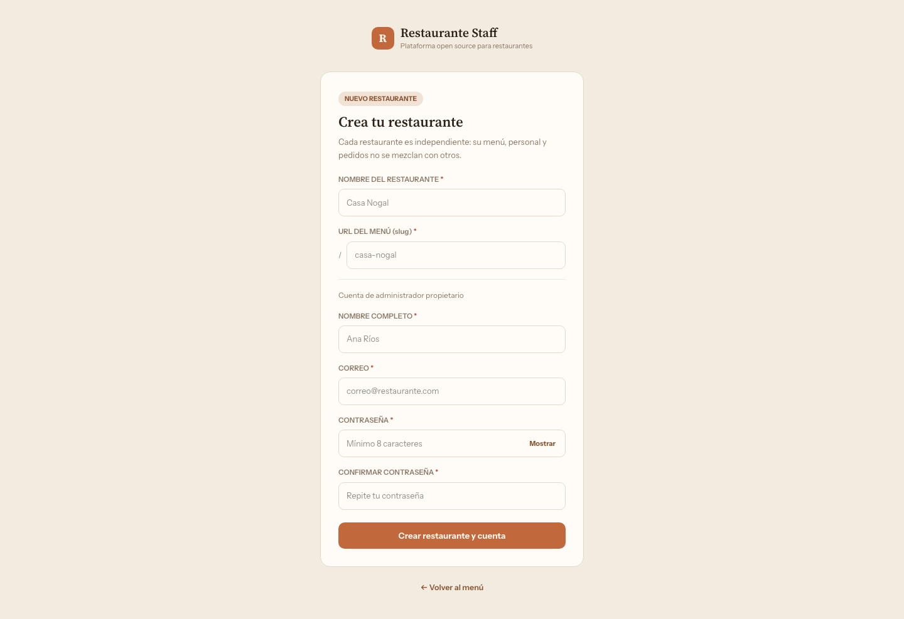
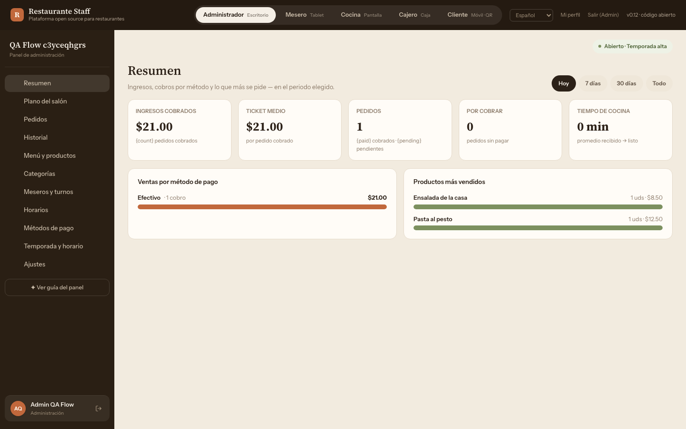
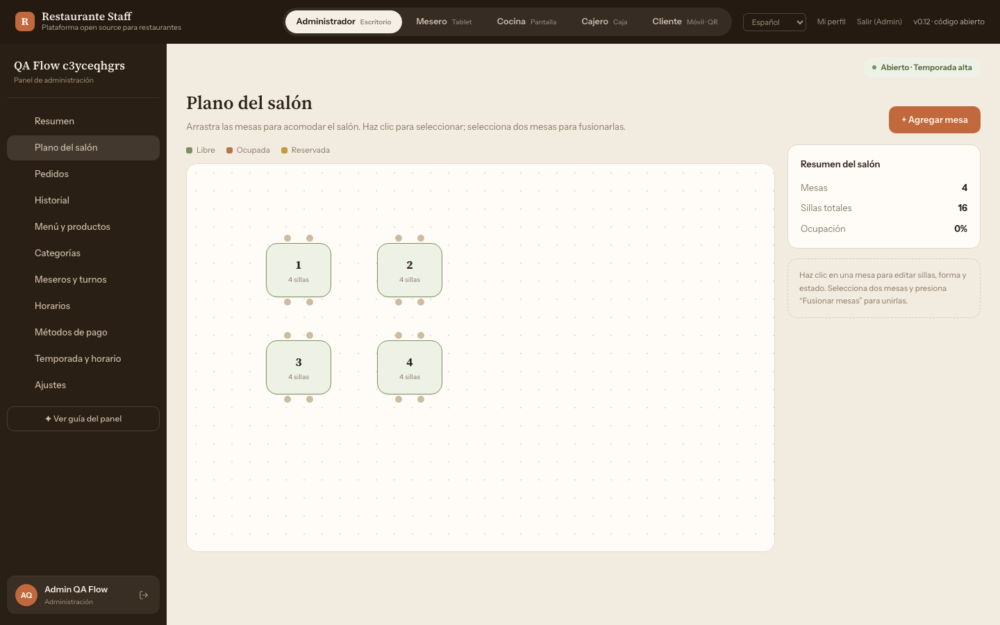
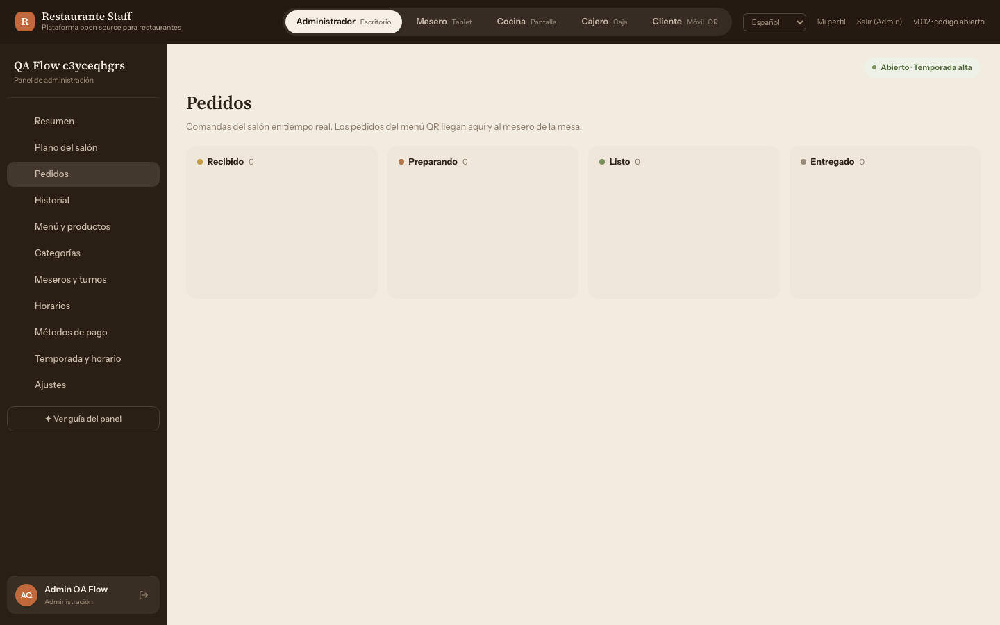
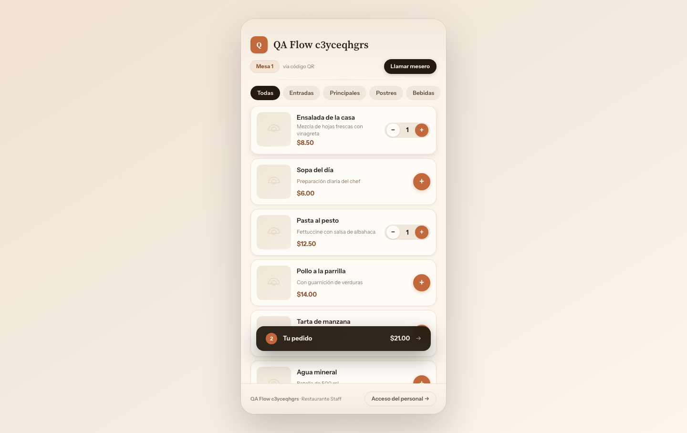
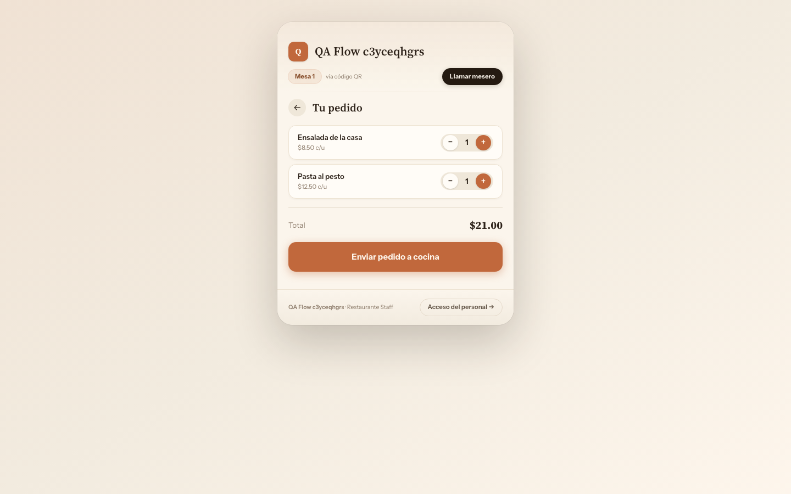
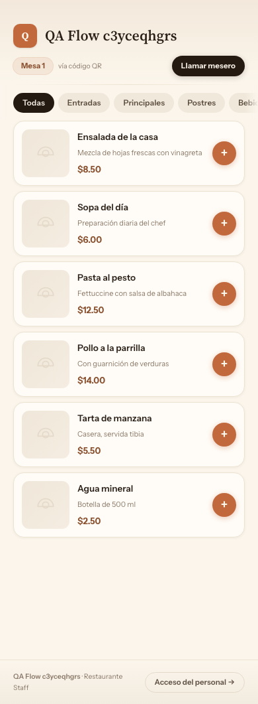

Restaurante Staff
Plataforma de gestión integral para restaurantes. Del QR del cliente a la cocina, mesero, caja y panel de administración en tiempo real.
Plataforma de gestión integral para restaurantes. Del QR del cliente a la cocina, mesero, caja y panel de administración en tiempo real.
Software open source que cubre el ciclo completo de una operación gastronómica: el cliente escanea el QR de su mesa, hace el pedido desde el móvil, la cocina lo recibe en tiempo real, el mesero lo gestiona desde la tablet y el administrador supervisa todo.
Menú por mesa sin instalar nada. Carrito, seguimiento en vivo y botón para llamar al mesero.
Comandas en tiempo real con Supabase Realtime, aviso sonoro, temporizador y acceso por PIN de 6 dígitos.
Tablet con vista de mesas, pedidos activos y llamadas. PWA offline: datos del turno aunque se pierda la red.
Cobro por método de pago (efectivo, tarjeta, transferencia). Historial y arqueo de caja.
Plano interactivo, kanban de pedidos, menú, personal, horarios, métricas y ajustes del local.
Wizard de 6 pasos para conectar Supabase sin código. Modo demo con datos de ejemplo en memoria.
npm start sin configurar nada



/r/:slug/mesa/:numero


Open source bajo licencia MIT. Arranca en modo demo en menos de un minuto. Conecta tu Supabase cuando quieras operar en producción.